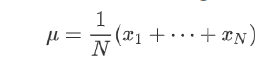
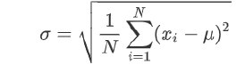

Facade Geometry Optimization with Real-time Agent-based Light Simulation
For light responsive facade design, we want to achieve a better interior light condition with control of transformation of the facade units. However, during the design process, there are problems with selecting a proper tool to simulate this process and make the right choice.
Most of the light simulation tools in the field are featured as accurate while taking a relatively long time to calculate, and they do not take curved surfaces as inputs. However, for early design process or for responsive facade elements, the inputs of facade unit will change fast after each iteration of simulation. Therefore the simulation tool requires fast calculation (almost real-time) , input flexibility and does not have to be so accurate as long as it can describe the basic behavior of light.
Figure 1 Responsive facade examples
Figure 2 Workflow for the tool
For each unit, there is a real number range from 0 to 1 which indicates the transformation of the unit. It can represent rotation, bending and also other transformation methods. This representation gives a good description of features for the facade and can be further utilized in the optimization. Users can also choose a specific location and time according to their requirement.
Figure 3 Input geometries
Figure 4 Input sun angles
The evaluator uses agent-based algorithm and can take any set of surfaces as input and evaluate the sunlight condition given certain sun angle. It will give both the grid analyzation and numbers of average illuminance and uniformity as output. The benefit of this tool is it simplifies the simulation process and gives immediate output which is suitable for responsive optimization.
Figure 5 Agent-based simulation process
The optimizer applies GA (Genetic Algorithm) and is able to adjust the transformation parameters according to the fitness generated by the evaluator. The following two objective functions have opsite relationship between each other, thus the final fitness function is to find a balance between them.
A. Illuminance: Average of cell values.
B. Uniformity: To avoid extreme small value for this objective (since Emin will sometimes become 0), we change it from Emin/Emax to negative standard deviation of the cell values.
Figure 6 Optimization diagram
Figure 7 Design space for a single type
Figure 8 Design choice after evaluation